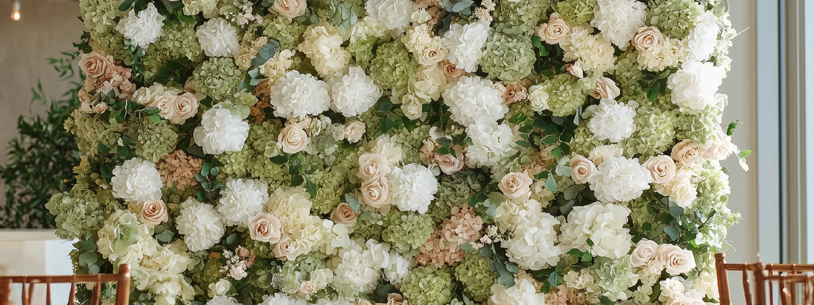
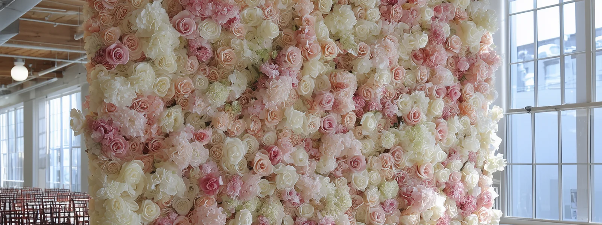

FLORINSKY provides flower wall rental in Pickering with hyper-realistic, studio-made floral backdrops for weddings, bridal showers, baby showers, birthdays, corporate events and private celebrations. Our collection includes oversized flower walls up to 11×8 ft, available in flat and semi-circular configurations, with delivery, professional setup and removal throughout Pickering. Choose from four exclusive floral designs — Green & Blush, Pink & Ivory, White & Ivory and Burgundy — created in our studio using premium Real Touch flowers.
Explore Our Flower Walls for Pickering Events


Green & Blush Flower Wall
Sage greenery, ivory and blush flowers create a botanical backdrop for weddings, showers and private celebrations.
Pink & Ivory Flower Wall
A soft composition of blush, dusty rose and ivory floral tones for weddings, baby showers and birthdays.
White & Ivory Flower Wall
A light, neutral floral background that works with a variety of event colour palettes and venue interiors.
Burgundy Flower Wall
Deep burgundy, wine and plum floral tones provide a rich background for evening receptions and formal celebrations.
Pickering offers several distinct event environments, from waterfront celebrations near Frenchman's Bay to modern event halls, cultural facilities and heritage properties in Greenwood.
A flower wall that works well in a large banquet hall may require a different setup in a waterfront restaurant or historic building. The important considerations are the exact event space, approved décor location, usable photography area and access available for delivery and removal.
This guide will help you choose a floral backdrop and identify the Pickering-specific details worth confirming before your event.
Flower Walls for Weddings, Showers & Events in Pickering
A flower wall can serve several purposes during an event, but the intended use should be decided before its final position is selected.
Weddings and Engagement Celebrations
For a wedding ceremony, a flower wall can create a defined floral background for the couple. At the reception, it may serve as a dedicated guest photography area or a decorative feature behind the sweetheart table.
These arrangements require different layouts.
When the wall sits behind a table, part of the floral surface may be concealed, and guests may not be able to approach it for photographs.
A separate photo area allows couples, families and wedding parties to stand directly in front of the flowers, but requires enough room for the people being photographed, the camera and other guests waiting nearby.
If the ceremony and reception take place in different spaces, discuss both locations with FLORINSKY before booking. Relocating a flower wall during the event should not be assumed to be included in the rental.
Our wedding flower wall rental guide explains the practical differences between ceremony backdrops, reception features and dedicated photo areas.

Bridal Showers, Baby Showers and Birthdays
For a bridal shower, baby shower or birthday celebration, decide whether the flower wall should frame a decorated feature table or become a separate photography area.
A backdrop behind a dessert or gift table can contribute to the room's overall design, but it may limit full-length guest photographs.
If guest photography is a priority, consider a location where people can stand directly in front of the flowers without moving furniture or interfering with the event.
The colour palette can then be selected around the actual room lighting and surrounding décor rather than the occasion alone.
Corporate Events and Business Celebrations
For a corporate event, the flower wall may be used for team photographs, guest portraits or a branded reception area.
A backdrop near the entrance may be visible to arriving guests, but that position can also become part of the registration queue or main circulation route.
Before approving the location, confirm whether registration tables, presentation equipment, sponsor displays or other event elements will occupy the same area.
If larger team photographs are important, the oversized 11×8 ft configuration provides additional floral width, helping keep more people against the floral background.
The relevant measurement is the width of the group you intend to photograph, not simply the total number of people attending the event.
Pickering Flower Wall & Event Venue Map | FLORINSKY
Explore event venues across Pickering, including waterfront properties, banquet halls, heritage buildings, cultural facilities and community event spaces.
Our interactive planning map will help you identify venue locations and review practical considerations before arranging a flower wall rental.
Open the full Pickering planning map
Select a venue to explore its event-space characteristics, access considerations, guest feedback and useful questions to confirm with the venue coordinator.
The map is provided as a planning resource. Inclusion does not indicate a partnership with FLORINSKY or that we have previously completed an installation at a particular venue. Venue policies, access arrangements and available event spaces may change. Confirm the requirements for your specific booking directly with the venue before arranging the installation.
Flower Wall Rental at Pickering Waterfront Venues
Pickering's waterfront provides a different event environment from a conventional banquet hall. A restaurant overlooking Frenchman's Bay, a private waterfront property and a community facility near the shoreline can have very different conditions for delivery, photography and outdoor décor.
For a waterfront celebration, decide whether the flower wall should incorporate the surrounding scenery or create a separate photographic background that remains consistent throughout the event.
Frenchman's Bay: Plan Around Light, Access and Guest Parking
A waterfront-facing photo area can look appealing during a venue tour, but the direction of natural light matters.
If guests stand between the camera and a bright window overlooking the water, their faces may be much darker than the background. A floral wall positioned away from the strongest backlighting can provide a more controlled photographic setting.
Before selecting the final position, evaluate the actual event space at approximately the time guests will be taking photographs.
Also consider the difference between guest parking and equipment unloading.
The City of Pickering operates seasonal paid-parking arrangements at designated waterfront locations. Those arrangements should not be treated as permission for an external décor vendor to unload at a particular entrance or access point.
For a waterfront venue, ask the coordinator to confirm the approved unloading location, vendor entrance and route to the actual event space.
A venue's general parking information may be useful for guests but insufficient for planning a flower wall delivery.
The Lake House: Choose the Photography Direction Before the Backdrop Position
The Lake House is located on Liverpool Road near Frenchman's Bay and offers a waterfront setting for private celebrations and events.
If your event is taking place here, first determine whether the floral backdrop should complement the water-facing setting or provide an independent photo area.
Placing the wall directly in front of a scenic window may reduce the view available from that part of the room. Positioning it elsewhere may preserve the waterfront setting while allowing more control over the photographic background.
Ask the venue for the layout of the space you have actually booked. Identify where guests will stand, where the camera will face and whether the proposed position will interfere with dining, entrances or service routes.
For delivery, confirm the entrance intended for external décor vendors rather than assuming equipment should arrive through the main guest entrance.
Outdoor Waterfront Events Need a Separate Setup Plan
A waterfront terrace, garden or lawn should not automatically be treated as an approved location for a freestanding floral backdrop.
Outdoor placement requires confirmation of the exact location, permission from the property owner or venue and an assessment of the surface and weather exposure.
The FLORINSKY adjustable support system for uneven terrain can accommodate certain uneven installation surfaces. However, this does not mean every lawn, slope or waterfront location is suitable for a flower wall.
The actual setup position must be assessed before installation is confirmed.
For an outdoor event, identify a suitable indoor or covered alternative in advance. The backup location should have enough usable space for the floral backdrop, people and camera rather than being selected only after conditions change.
Planning Your Flower Wall at Pickering Event Venues
Pickering has event spaces with distinctly different layouts: dedicated banquet halls, municipal facilities, heritage buildings and smaller private venues.
The venue's total capacity does not necessarily indicate how much room will be available for a flower wall.
The useful measurement is the clear space allocated to the actual photography area after tables, seating, staging and other event elements have been arranged.
Pickering Event Centre: Confirm the Exact Room
Pickering Event Centre offers several event options, including its Grand Hall and Atrium Room.
These spaces should not be treated as interchangeable when planning a flower wall.
A backdrop intended for a large reception may require a different position from one used for a smaller celebration or a dedicated photo area.
Before selecting the final configuration, request the layout of the booked room and identify the approved location for external décor.
If the wall is intended for group photographs, check how much usable width and camera distance remain once the actual event furniture is in position.
Confirm the vendor entrance, unloading arrangements and permitted installation window directly with the venue.
Pickering Museum Village: Historic-Site Rules Can Affect Floral Décor
Pickering Museum Village offers heritage settings for weddings and other celebrations, including historic spaces suitable for ceremonies and receptions.
Its published wedding rental guidance allows outside vendors but requires them to follow site rules and provide appropriate insurance. The museum also has specific conservation requirements for live or cut floral materials, plants and related decorations.
This distinction matters when arranging external décor.
FLORINSKY uses hyper-realistic Real Touch flowers rather than fresh floral arrangements, but the museum's requirements for external decorations and installations must still be confirmed for the proposed flower wall.
Do not assume that permission to bring an outside florist or photographer automatically establishes approval for a large freestanding floral structure.
Ask the museum to confirm the exact booked space, approved installation position, carrying route and applicable vendor requirements.
If your celebration uses more than one heritage building or combines an indoor ceremony with an outdoor reception, identify which locations are included in the booking and whether the flower wall is intended to remain in one position.
Dorsay Community & Heritage Centre: Distinguish the Hall From the Garden
Dorsay Community & Heritage Centre in Greenwood offers indoor event spaces and outdoor garden settings, with facilities designed for weddings, private celebrations and corporate functions.
For a flower wall rental, the first decision is whether the backdrop belongs in the main event room, another booked indoor area or the outdoor garden.
These locations may require different placement, carrying routes and installation arrangements.
If the event includes an outdoor ceremony and an indoor reception, confirm whether the flower wall will remain in a single position or whether separate décor arrangements are needed.
A venue booking that includes access to the garden does not, by itself, confirm that every part of the grounds is available for freestanding installations.
For indoor events, request the actual room layout and confirm how the stage, dining tables, entrances and other event elements affect the available photography area.
Flower Wall Delivery & Setup in Pickering
When arranging flower wall rental with delivery in Pickering, the venue's street address is only the starting point.
The complete installation plan needs to account for the route from the delivery vehicle to the approved backdrop position.
A useful sequence is:
Approved unloading point → vendor entrance → carrying route → exact event room → approved flower wall position.
A venue can have convenient guest parking while requiring external vendors to use a different entrance or unloading location.
Before finalizing your rental, ask the venue which route should be used for equipment delivery and whether carts, elevators or stairs are involved.
Waterfront and Bay Ridges: Confirm the Unloading Point
For events near Frenchman's Bay, Liverpool Road or other waterfront locations, identify the approved unloading point before event day.
A public parking area, restaurant entrance or waterfront access road may not be the appropriate route for commercial equipment.
Ask the event coordinator to provide the location where a delivery vehicle may stop and the entrance through which the floral backdrop should be brought inside.
If the carrying route includes outdoor walkways or a significant distance from the unloading point, share that information with FLORINSKY before the setup is finalized.
City Centre and the Highway 401 Corridor: Identify the Actual Event Space
Venues around Pickering's City Centre and Highway 401 corridor may combine multiple event rooms, commercial premises, parking areas and separate entrances.
For a property with several event spaces, provide the exact hall or room name rather than only the venue address.
Ask whether the room will be divided, whether the photo area is inside the booked space and which entrance external décor vendors should use.
If the event layout has not yet been finalized, mark the proposed backdrop position on the floor plan before other furniture and equipment occupy the available space.
Greenwood and Northern Pickering: Check the Full Carrying Route
For heritage properties, rural settings and event spaces in northern Pickering, the carrying route may include outdoor ground, paths, stairs or entrances that are not evident in promotional photographs.
The suitability of the final event room does not guarantee that every installation configuration can reach it.
Before booking, confirm the approved entrance, any doorway or stair restrictions and the surface along the route from unloading to the installation position.
For outdoor settings, share a photograph of the exact proposed location with FLORINSKY so the installation can be considered in the context of the actual venue.
Allow Time for Installation and Removal
Ask the venue two separate questions:
When may the décor vendor begin bringing equipment into the event space? By what time must installation be complete?
These times may differ if other vendors are preparing the room or the venue has multiple events scheduled.
The removal plan is equally important. Confirm when the room must be cleared and which entrance will be available when FLORINSKY returns to collect the flower wall.
For municipal facilities, do not assume that the entire building remains available after your permitted event period.
Choosing the Right Flower Wall Size & Configuration
FLORINSKY offers standard 8×8 ft flower walls and oversized configurations up to 11×8 ft.
The expanded format provides additional floral width for larger group photographs and more spacious event areas.
However, the appropriate size should be chosen around the usable photography area, not simply the venue's total capacity.
8×8 ft Flower Wall
The standard 8×8 ft configuration provides a square floral backdrop for portraits, couples and smaller group compositions.
It can be considered for dedicated photography areas in private event rooms, community facilities and banquet halls where the available width is more limited.
The dimensions of the flower wall are not the complete space required for photography.
Guests need room to stand in front of the floral surface, while the photographer needs enough distance to capture the intended composition.
Before selecting this format, check the usable width and depth of the actual photo area.
Oversized 11×8 ft Flower Wall
The expanded 11×8 ft configuration provides three additional feet of floral width.
This can be useful for larger family, wedding-party and corporate-team photographs because more people can remain against the floral background rather than extending beyond its edges.
The expanded format also requires additional uninterrupted width.
Check whether the proposed installation would obstruct a doorway, service route, window or another part of the event layout.
For larger Pickering event venues, request the floor plan for the specific room or hall rather than relying on the overall dimensions advertised for the property.
Flat or Semi-Circular Flower Wall?
A flat flower wall provides a relatively linear photographic background.
A semi-circular configuration brings the floral surface around the photography area, creating a more dimensional arrangement.
The semi-circular option requires additional usable floor depth for the structure itself, guests, camera position and movement into and out of the photo area.
In a compact private event room, a flat configuration may provide a more practical layout.
For a larger banquet hall or dedicated photography area, a semi-circular installation may be considered when the available space and venue requirements allow it.
Before choosing the final configuration, review the actual room dimensions and approved installation position.
Review the Floral Design Before Finalizing the Room Layout
When comparing FLORINSKY designs, consider the colours and textures in relation to the room where the event will take place.
White & Ivory provides a neutral floral background. Pink & Ivory introduces softer blush and rose tones. Green & Blush combines botanical greenery with a lighter floral palette, while Burgundy offers deeper wine and plum tones.
A floral design may appear different in a daylight-filled waterfront venue than it does in a banquet hall illuminated by warm chandeliers or coloured uplighting.
FLORINSKY's 3D Preview allows you to examine the floral design in greater detail before selecting the final backdrop.
For the most useful comparison, consider the actual room lighting and the photography direction expected during your event.
Outdoor Flower Wall Setup in Pickering
Outdoor flower wall installations require both permission to use the selected location and confirmation that the installation can be set up safely there.
A garden, waterfront terrace, private lawn or municipal park may look suitable for photographs without automatically being an approved location for a freestanding floral structure.
Before arranging outdoor décor, identify the exact position and confirm the requirements that apply to your event.
Private Waterfront Properties and Gardens
At a private Pickering venue, ask the coordinator whether the proposed location is included in your event booking and whether external freestanding décor is permitted there.
A patio or garden used for guest photography may have different permissions from the main indoor event room.
For the proposed outdoor installation, confirm the surface, access route, available space and weather exposure.
The location should also allow guests to approach the photo area without obstructing entrances, walkways or other event activities.
An indoor or covered alternative should be identified before event day.
City of Pickering Parks and Municipal Property
The City of Pickering provides separate information for municipal facility rentals, outdoor event spaces and public festivals or community events. These activities may be subject to different approval procedures.
A reservation for a park or municipal facility should not be treated as automatic permission to install a freestanding flower wall.
For a private celebration on City property, confirm whether the selected location is available for the intended event and whether the proposed floral installation is allowed under the applicable booking.
For a public event, the organizer may need to follow a different approval process.
Ask the City or facility coordinator to confirm the requirements for the specific property and event rather than assuming that all outdoor celebrations follow the same rules.
Municipal Facility Rentals: Include Setup and Removal in Your Schedule
The City of Pickering publishes rental conditions that include requirements for removing decorations and event supplies when a booked facility is vacated. Its facility-rental application also identifies a different closing deadline for Dorsay Community & Heritage Centre than for other listed facilities.
For your event, confirm the exact period during which the rented room is available for external vendors.
If guests are expected to arrive immediately when the room booking begins, there may be insufficient time to install the flower wall beforehand.
Similarly, if the booking ends as soon as the celebration finishes, the removal schedule may need to be adjusted before the rental is confirmed.
Ask the facility coordinator to confirm the approved installation and removal windows in writing.
What to Confirm Before Booking Your Flower Wall
A useful flower wall rental enquiry connects the preferred floral design with the actual event space.
The following information helps determine the installation requirements before your Pickering event.
| Information | Why it matters |
|---|---|
| Event date | Confirms availability for the requested date. |
| Venue name and full address | Identifies the delivery location. |
| Exact room, hall or outdoor area | Prevents planning around the wrong event space. |
| Preferred floral design | Establishes which flower wall you are considering. |
| Preferred size and configuration | Helps determine the required installation area. |
| Intended use | Distinguishes a guest photo area from a ceremony or reception feature. |
| Approved backdrop position | Confirms that the venue accepts the proposed location. |
| Vendor entrance and unloading instructions | Establishes the equipment delivery route. |
| Stairs, elevators or doorway restrictions | Identifies possible access limitations. |
| Earliest vendor access and setup deadline | Defines the available installation window. |
| Removal time and exit route | Establishes end-of-event access. |
| Outdoor permission and backup location | Provides an alternative if the outdoor plan changes. |
| Current floor plan or location photograph | Helps evaluate the complete photography area. |
For a waterfront event, include any instructions about parking or access to the proposed installation location.
For a heritage or municipal facility, confirm the external-vendor requirements and the period during which the booked space is available.
You do not need to know every answer before contacting FLORINSKY. The purpose of this checklist is to identify the details that still need to be confirmed before your event.

Pickering Areas We Serve
FLORINSKY provides flower wall rental throughout Pickering, including Bay Ridges, West Shore, Liverpool, City Centre, Amberlea, Rougemount, Dunbarton, Highbush, Brock Ridge, Duffin Heights, Seaton, Greenwood and other communities within the city.
Events across these areas may take place in waterfront properties, private residences, banquet halls, restaurants, cultural facilities, community centres and outdoor event spaces.
For delivery planning, provide the exact event address and the room or outdoor area where the flower wall will be installed.
FLORINSKY also provides flower wall rental throughout Toronto and surrounding GTA communities.
Pickering Event Venues to Consider When Planning Your Backdrop
The following venues illustrate different event environments across Pickering. They are planning references, not rankings, endorsements or claims that FLORINSKY has previously completed installations at these properties.
Each location has its own layout and booking requirements. The practical questions below are intended to help you plan a flower wall for the specific event space you have reserved.
The Lake House
The Lake House is a waterfront event venue on Liverpool Road. Its setting near Frenchman's Bay makes photography direction, natural light and the relationship between the floral backdrop and waterfront views important planning considerations.
Decide whether the wall should create a separate photo area or become part of the room's existing scenic background. Confirm the booked event space, approved décor position and vendor entrance before arranging installation.
Pickering Event Centre
Pickering Event Centre offers the Grand Hall and Atrium Room for different event arrangements. Before planning a flower wall, confirm which room is booked and request the layout showing the actual furniture and event setup.
The installation position should be selected around the available photography area rather than the building's overall capacity. Ask which entrance external décor vendors should use and when installation may begin.
Pickering Museum Village
Pickering Museum Village provides historic settings for wedding ceremonies and receptions. Its published wedding guidance allows outside vendors subject to site requirements, including insurance, and establishes special rules for certain floral and plant materials.
Before bringing in a freestanding flower wall, confirm the exact booked building or outdoor area, applicable décor restrictions and the approved equipment route. If the event uses more than one heritage space, ask whether the wall can remain in one approved position throughout the celebration.
Dorsay Community & Heritage Centre
Dorsay Community & Heritage Centre offers indoor event facilities together with outdoor garden and patio spaces. Its main event hall includes a stage, making the actual floor plan important when choosing a floral backdrop position.
A wall intended for guest photographs may require a different location from one used as part of a ceremony or stage setting. Confirm whether the proposed installation is indoors or outdoors, which spaces are included in the booking and when external vendors may enter and remove equipment.
Chestnut Hill Developments Recreation Complex
Chestnut Hill Developments Recreation Complex offers multiple rental spaces for social events, galas, meetings and other gatherings. Because it is a multi-use municipal facility, the exact booked room matters more than the general building address.
Confirm the permitted décor location, vendor entrance, installation period and removal deadline before selecting the flower wall configuration. Ask for the actual event layout so the floral installation does not obstruct access or overlap with other activities in the rented space.
Omani Event Centre
Omani Event Centre is an event venue on Bayly Street in Pickering. Before choosing a floral backdrop, confirm the actual event room, its approved décor area and whether external installations are permitted.
Request the final furniture layout to determine how much space remains for the flower wall, guests and camera. The venue should also confirm the unloading point and entrance intended for outside décor vendors.
Remarkable Event Centre
Remarkable Event Centre is located on Orangebrook Court in Pickering. For a wedding reception or private celebration, confirm the dimensions and layout of the actual room before choosing between the 8×8 ft and expanded 11×8 ft flower wall configurations.
Ask whether the floral backdrop will occupy a dedicated photo area or form part of the main event décor, and confirm the approved delivery route and installation window.
Loft 905 Event Space
Loft 905 Event Space is located on Plummer Street in Pickering. If you are considering a flower wall for this venue, request the current room layout rather than selecting a backdrop position from promotional photographs alone.
Confirm the clear width and depth allocated to photography, the route from the approved unloading point and whether the proposed position affects entrances or other event activities.
The Carvers Cottage
The Carvers Cottage is located on 9th Concession Road in Pickering. For an event at this property, confirm the exact indoor or outdoor area included in the booking and whether a freestanding floral backdrop is allowed at the proposed position.
If the location involves a lawn, garden or outdoor carrying route, provide photographs of the surface and access conditions before the installation plan is finalized. Identify an indoor or covered alternative if the flower wall is intended to be installed outdoors.
Flower Wall Rental Pickering FAQs
Do you provide flower wall rental with delivery and setup in Pickering?
Yes. FLORINSKY provides flower wall rental throughout Pickering with delivery, professional setup and removal.
Include the full venue address, exact event room and any access instructions supplied by the venue when requesting your quote.
What flower wall sizes are available for Pickering events?
FLORINSKY offers standard 8×8 ft and expanded 11×8 ft flower wall configurations.
The appropriate size depends on the available venue space, intended photographic composition and selected floral design.
Can I choose a flat or semi-circular flower wall?
Yes. FLORINSKY offers both flat and semi-circular configurations.
The semi-circular option requires additional usable floor depth. Confirm the approved installation position and available space before the event layout is finalized.
Can a flower wall be installed at a Pickering waterfront venue?
Potentially, subject to the venue's permission and the suitability of the exact location.
For an outdoor terrace, garden or waterfront photo area, confirm that the space is included in your event booking, that freestanding décor is permitted and that an appropriate installation surface and access route are available.
Can I rent a flower wall for an event at Pickering Museum Village?
Potentially, subject to the museum's approval and applicable external-vendor requirements.
The museum has specific site rules and conservation requirements for certain floral decorations. Confirm the proposed freestanding flower wall, exact installation position and any required vendor documentation directly with the museum before finalizing the rental.
Does booking a Pickering park allow me to install a flower wall?
Do not assume so.
The City of Pickering has different booking and approval procedures for municipal facilities, outdoor event spaces and public events. Confirm whether the proposed freestanding floral installation is permitted under the requirements applicable to your specific event and location.
How much does a flower wall rental cost in Pickering?
Current pricing for each floral design is listed on its product page. The final quote for your event depends on the selected design, size, configuration and delivery, setup and removal details.
Send your event date, venue address, preferred floral design, size and access information to receive a quote for your specific event.
What should I confirm if my Pickering venue has several event rooms?
Provide the exact hall, ballroom or event-room name, together with the current floor plan if available.
Confirm the approved backdrop location, vendor entrance, unloading point, any stairs or elevator restrictions and the permitted installation and removal times.
Can a flower wall be installed on an uneven outdoor surface?
FLORINSKY offers an adjustable support system designed to accommodate certain uneven surfaces.
However, every proposed outdoor location must be assessed individually. Venue permission, surface conditions, access, weather exposure and the suitability of the specific installation all need to be considered before setup can be confirmed.
For additional information about the rental process, visit our Flower Wall Rental FAQ.